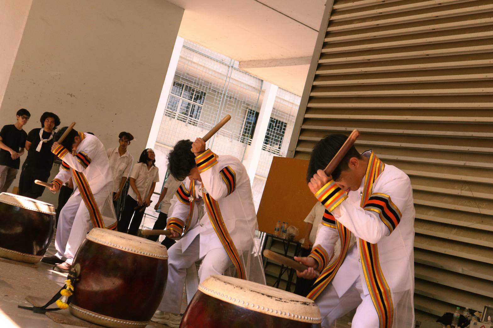
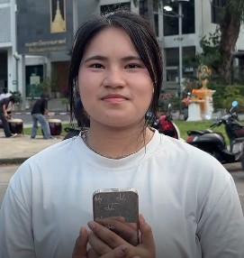
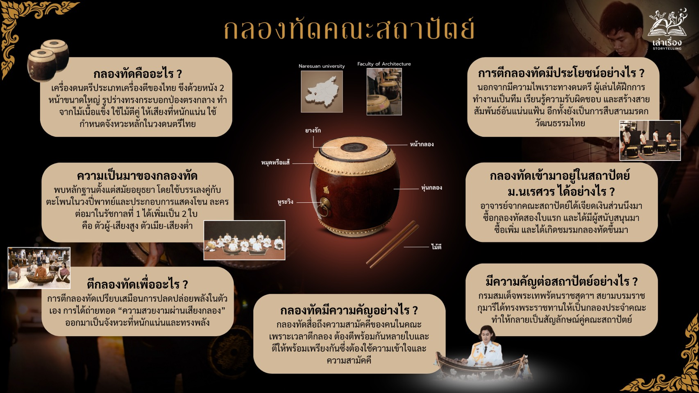

สัญลักษณ์แห่งความสามัคคีและจิตวิญญาณ
แห่งสถาปัตยกรรมไทย
10 มีนาคม 2569

จุดเริ่มต้นแห่งตำนาน



จุดเริ่มต้นและความหมายใน ม.นเรศวร

กลองทัดของคณะสถาปัตยกรรมศาสตร์ มหาวิทยาลัยนเรศวร เริ่มต้นจากความตั้งใจของอาจารย์ในคณะที่ได้เจียดเงินส่วนหนึ่งมาซื้อกลองทัดสองใบแรกให้กับคณะ
เสียงแห่งหัวใจที่เต้นพร้อมกัน

กลองทัดไม่ได้เป็นเพียงเครื่องดนตรี หากแต่เป็นสัญลักษณ์ของความสามัคคี
เส้นทางจากเสียงกลอง

การตีกลองทัดเปรียบเสมือนการปลดปล่อยพลังในตัวเอง
ทำความรู้จักลักษณะของกลองทัด

คณะผู้จัดทำ
ณัฐวุฒิ สอนไว
ธนชิต บรรเจิด
ศศธร แก้วสูงเนิน
กนกภัณฑ์ คำอิน
ปวริศา หิรัญกุล
ชญาภา วงษ์ธัญญะ